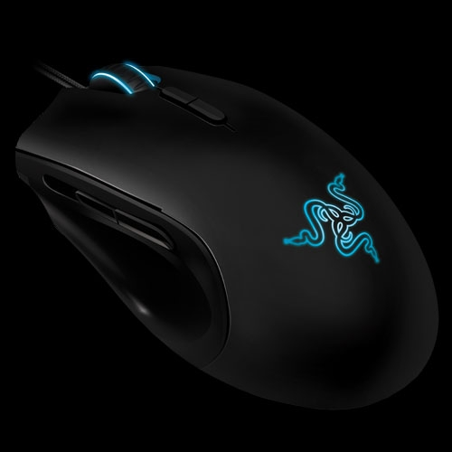
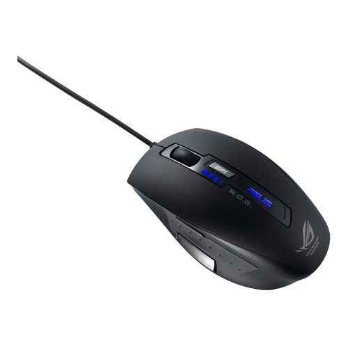

still the best: Logitech m-bj58
Razer mice, any one that suits you.
Razer, if you feel like spending a lot for something that doesn’t really have much over other mice.
I use a Coolermaster Sentinel Zero-G. I got it when it was on discount for £25, and it has the same specs as mice twice it’s price; laser resolution, acceleration parameters, number of prgrammable buttons(mindboggling amounts), lights, all that jazz. You can change the dpi in 100-point increments from the mouse itself, in seperate x/y directions(also 4 larger levels to quickly switch too and from), and if you don’t want the bloated software on your PC you can do a one time setup with the disc and it’ll store your settings on the mouse. Coolermaster isn’t the first company I think of when it comes to mice, but I read reviews, and I’ve had it for a while now. It’s damn good.
Also it can do this;
I stand by my MX518.
I strongly advise against the Logitech G500, for the following reasons:
-Scroll button sticks out too much and makes it almost impossible to use the middle button without accidently scrolling up or down.
-3 thumb activated buttons can be confused during gameplay, I don’t have time to figure out which one is which so I set them all to KNIFE
-The DPI control buttons are okay, but bending your pointing finger to the left to reach these buttons feels weird
and finally, appearance
Nice design, it has a burn mark on the palm and the two mouse buttons, it looks like it’s already been used
The only plusses are that it has a braided cord and it comes with weight cartridges to tune to your personal taste,
(not that I use them, the damn thing is heavy enough).
edit: I found the learning curve a bit steep, going from a standard MS mouse, it took me around 4-5 weeks to get back into gear.
I have a razor imperator, bought it with BF3, they had an offer where you could get it cheaper with a BF3 print on it. It is my far the most comfortable mouse i have had until now, even though it is with a wire. The wire is extremely bendable so it doesn’t get in the way when playing. And i like it because it is not filled with thousands of buttons.

Not sure if its too late too join in, but I would recommend the rat 7 or 9, maybe even 5.
I have a 9 and it is awesome, customization options like no other(that I know of) good hot swap batteries when you get used too it, solid with a metal base good range of dpi, 3 customizable profiles and the “precision” button. I have had a few problems where you need to unplug and re-plug the mouse to get it starting after it goes too sleep. But other than that no problems at all.
I myself am not much for razor as I’ve had both my mice break down within 2 years.
But my friend has a g500 and it is quite nice, not my ideal shape but solid and cheap.
I don’t get why people tout the ‘precision’ button on the R.A.T mice as a special feature. Afaik a lot of mice have that. The only thing that makes those mice special is the comfort factor.
I don’t know Siggs, I haven’t looked around for that so called feature(I do think cyborg used it for marketing) and too be honest I have probably never used it. Still some people might find it sweet to have, if anyone is unsure how it works it lets you can set it up however you want it, 0-100% of normal speed with is active while the button is pressed.
But if going for a rat comfort is really what you should go after.
The precision button is the thumb button that changes DPI on the fly?
That’s not something I would like personally, because my thumb button is usually set to my most important movement feature (prone, when I played APB it was the camera switch, etc). I don’t generally use DPI switches.
Siggs, I’ll be looking into that coolermaster for sure. Now this is obviously not a good comparison, but I do have a (cheap)coolermaster tower and it is solid as a rock. I’m hesitant to get a Razor for the same reason I don’t buy Alienware, generally you can find something of comparible (or surpassing) quality without playing for the brand name. (Those Nagas seem pretty unique though)
EDIT: Okay, I checked out that coolermaster, NCIX has one for $50 CND. Which buttons are it’s DPI increments, or are those programable?
I have been using a G5 since 2006, and it would be against my better judgment to recommend anything else.
Most solidly built, feature rich, smoothly operating mouse ever made.
Ha, That’s the same amount of time that I’ve had my G5. Isn’t the G500 supposed to be a direct upgrade to the G5 though?
Even with the braided cord, I destroyed a G5+G15(1st gen) combo in less than a year.
Were you testing bunker bombs on it? O_o My G15 has withstood the most rage inducing game experience known to man(APB:R), and lived through it without a scratch.
EDIT: And siggs, I notice that Sentinel has the coolermaster mesh on the back of it, is it going to be a pain in the ass to clean out?
I dont like the feel of the G500, would recommend the Asus GX800, sits well in the hand, and the forward and back keys is up and down on the side instead for forward and back, its much better when one gets used to it, i have given it quite a beating but still works 

Rot Im not 100% but I believe you can set it to anything, even if not you still have 2 more thumb buttons to use for that. But as I have said before the pure options with it is what makes it so good, changing angles of thumb, slide forwards/backwards 3 back parts and 3 pinky rests/right-sides.
Rot, there is a mesh on the top yes, but right underneath it there’s a layer of plastic, then the led below it. So, no, there’s not any dirt actually getting into the mouse if that’s what you’re getting at, although my one has a very mild buildup of dust in the holes. Specks that’re only noticeable if you squint closely, and then see stars for the next few minutes because you were looking right at the led if you’ve seen the promotional pictures there are lights in the front too either side of the braided cable. 
As for the controls;
(mine came with shattered horizon, that’s before I customized the display)
The two behind the scrollwheel control the 4-step presets for dpi; Mine are 1200by1200, 2000by2000, 4000by4000, and 5600by5600. The presets are customiseable by using the button on the nose of the mouse. Hold that and it lets you edit in 100dpi indrements.
pressing that nose button lets you switch between 5 different profiles, each with their own dpi settings. The buttons on the side are your normal forwards/back in explorer and internet browsers.
I chose not to install the software, and set them up to store on the mouse, but what I used of it there’s an insane amount of different presets that can be assigned for the buttons. Buuuuuut unfortunately it only has the 5 facebuttons, left, right, thumb buttons and click mousewheel. The three dpi ones aren’t programmable.
It also has 5x4.6 gram weights at the back of the mouse, and the wheel has a nice notchy feel.
^Awesome.
I’ve ordered the Sentinel, all my other experiences with coolermaster have been good, and it is a good price. I’ll let you all know how I like it in a few days when it comes in.
Thanks everyone for all your help!
This doesn’t neeed to die though, I wouldn’t mind hearing more about other people’s mouse preferences and why.
General computer mouse thread.[/SIZE]
Go!
Reading through this thread I just noticed that I have those mouse wheel side to side buttons as well .
I’m using an Alienware Tactx mouse and it works for me. Has two buttons on the left side of it. I probably don’t know all the features (like I said, I didn’t even realize it had the sideways moving mousewheel), though.
Edit: Seems to have some pretty bad reviews though…
They definitely are. I wouldn’t recommend one unless you do a lot of stuff that needs a lot of buttons that are easy to reach quickly without having to move away from WASD. So basically MMOs and possibly mapping, modeling, photoshop, etc.
I hope the Sentinel works out for you, that thing does look quite nice.